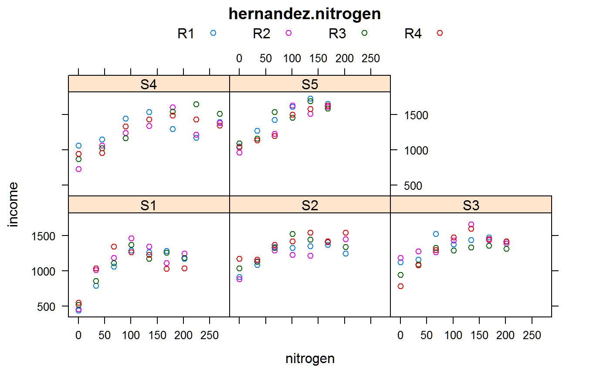

hernandez.nitrogen.RdCorn response to nitrogen fertilizer at 5 sites.
A data frame with 136 observations on the following 5 variables.
sitesite factor, 5 levels
loclocation name
reprep, 4 levels
nitronitrogen, kg/ha
yieldyield, Mg/ha
Experiment was conducted in 2006 at 5 sites in Minnesota.
Hernandez, J.A. and Mulla, D.J. 2008. Estimating uncertainty of economically optimum fertilizer rates, Agronomy Journal, 100, 1221-1229. https://doi.org/10.2134/agronj2007.0273
Electronic data kindly supplied by Jose Hernandez.
# \dontrun{ library(agridat) data(hernandez.nitrogen) dat <- hernandez.nitrogen cprice <- 118.1 # $118.1/Mg or $3/bu nprice <- 0.6615 # $0.66/kg N or $0.30/lb N # Hernandez optimized yield with a constraint on the ratio of the prices. # Simpler to just calculate the income and optimize that. dat <- transform(dat, inc = yield * cprice - nitro * nprice) libs(lattice) xyplot(inc ~ nitro|site, dat, groups=rep, auto.key=list(columns=4), xlab="nitrogen", ylab="income", main="hernandez.nitrogen")# Site 5 only dat1 <- subset(dat, site=='S5') # When we optimize on income, a simple quadratic model works just fine, # and matches the results of the nls model below. # Note, 'poly(nitro)' gives weird coefs lm1 <- lm(inc ~ 1 + nitro + I(nitro^2), data=dat1) c1 <- coef(lm1) -c1[2] / (2*c1[3])#> nitro #> 191.7198## nitro ## 191.7198 # Optimum nitrogen is 192 for site 5 # Use the delta method to get a conf int libs("car")#>#> #> #> #> #> #>#> #>#> #> #>del1 <- deltaMethod(lm1, "-b1/(2*b2)", parameterNames= paste("b", 0:2, sep="")) # Simple Wald-type conf int for optimum del1$Est + c(-1,1) * del1$SE * qt(1-.1/2, nrow(dat1)-length(coef(lm1)))#> [1] 118.9329 264.5067## 118.9329 264.5067 # Nonlinear regression # Reparameterize b0 + b1*x + b2*x^2 using th2 = -b1/2b2 so that th2 is optimum nls1 <- nls(inc ~ th11- (2*th2*th12)*nitro + th12*nitro^2, data = dat1, start = list(th11 = 5, th2 = 150, th12 =-0.1),) summary(nls1)#> #> Formula: inc ~ th11 - (2 * th2 * th12) * nitro + th12 * nitro^2 #> #> Parameters: #> Estimate Std. Error t value Pr(>|t|) #> th11 1.009e+03 4.228e+01 23.871 < 2e-16 *** #> th2 1.917e+02 4.230e+01 4.532 0.000182 *** #> th12 -1.766e-02 6.762e-03 -2.612 0.016288 * #> --- #> Signif. codes: 0 '***' 0.001 '**' 0.01 '*' 0.05 '.' 0.1 ' ' 1 #> #> Residual standard error: 93.29 on 21 degrees of freedom #> #> Number of iterations to convergence: 2 #> Achieved convergence tolerance: 1.789e-07 #># Wald conf int wald <- function(object, alpha=0.1){ nobs <- length(resid(object)) npar <- length(coef(object)) est <- coef(object) stderr <- summary(object)$parameters[,2] tval <- qt(1-alpha/2, nobs-npar) ci <- cbind(est - tval * stderr, est + tval * stderr) colnames(ci) <- paste(round(100*c(alpha/2, 1-alpha/2), 1), "pct", sep= "") return(ci) } round(wald(nls1),2)#> 5pct 95pct #> th11 936.44 1081.93 #> th2 118.93 264.51 #> th12 -0.03 -0.01## 5 ## th11 936.44 1081.93 ## th2 118.93 264.51 # th2 is the optimum ## th12 -0.03 -0.01 # Likelihood conf int libs(MASS)#> #>#> #> #>#> #> #>#>#> 5% 95% #> 147.96 401.65#> #>#> #> #>#> #> #>dat1$fit <- fitted(nls1) bootfun <- function(rs, i) { # bootstrap the residuals dat1$y <- dat1$fit + rs[i] coef(nls(y ~ th11- (2*th2*th12)*nitro + th12*nitro^2, dat1, start = coef(nls1) )) } res1 <- scale(resid(nls1), scale = FALSE) # remove the mean. Why? It is close to 0. set.seed(5) # Sometime the bootstrap fails, but this seed works boot1 <- boot(res1, bootfun, R = 500) boot.ci(boot1, index = 2, type = c("perc"), conf = 0.9)#> BOOTSTRAP CONFIDENCE INTERVAL CALCULATIONS #> Based on 500 bootstrap replicates #> #> CALL : #> boot.ci(boot.out = boot1, conf = 0.9, type = c("perc"), index = 2) #> #> Intervals : #> Level Percentile #> 90% (150.3, 359.7 ) #> Calculations and Intervals on Original Scale## Level Percentile ## 90 # }